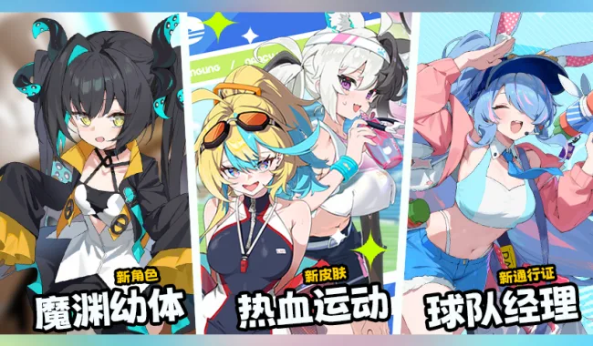

官方公告/201
07月30日版本更新 发布ID：201 “欢迎来到吉星派对！” 亲爱的玩家们，游戏将于2026年07月30日10:00（UTC+8）进行一次更新，完成更新后，请重新登录游戏。 ▇ 更新时间 2026年07月30日10:00（…
07月30日版本更新 发布ID：201 “欢迎来到吉星派对！” 亲爱的玩家们，游戏将于2026年07月30日10:00（UTC+8）进行一次更新，完成更新后，请重新登录游戏。 ▇ 更新时间 2026年07月30日10:00（UTC+8），预计维护4小时。 ▇ 更新内容 1.新角色登场 --- 魔渊幼体 “要好好听年长者的忠告哦~” 角色UP活动期间，在“魔渊幼体UP”页签进行抽奖，会有更高概率获得该新角色。 2.运动会合作挑战地图更新 •新增了地图畸变组件：安全官突击、家有锦鲤、亲切裁判、全力全开 •新增了地图专属筹码：运动手环、时间怀表、自适应核心、娱乐终端、原初意识 •新增了通用筹码：紫色飞星、金色飞星 •地图场景元素更新 3.上线活动 ---【S8-智械狂潮下半期】 --- 2026/07/30 ~ 2026/09/03 玩家可从主界面进入活动，完成活动任务可获得奖杯雪花球，使用奖杯雪花球在对应卡池中抽取大奖皮肤"拉拉队员-璐璐"。 此外，参与活动获得【星星奖章】，累计进度可领取异画卡牌巧克力蛋糕（异画）。 4.上线通行证 --- “球队经理-米米” --- 2026/07/30 ~ 2026/09/02 玩家可从主界面进入查看，购买并完成通行证任务可获得新皮肤“球队经理-米米”以及其他丰厚的奖励。 5.上线活动 --- 七日礼物 --- 2026/07/30 ~ 2026/09/02 每日登陆即可领取奖励，总计可获得星盘×160、星辉雪花球×2、鼠鼠筹码×200、中级战斗宝典×5等。 6.上线活动 --- 星愿回归 版本更新后，符合回归条件的老玩家，通过签到和免费礼包即可获得回归福利自选箱×1、抽奖券×10、星盘×900等奖励。此外，完成回归任务，获得大量回归福利代币，可在回归商店中兑换丰厚奖励。 7.上线活动 --- 艾米小补给 --- 2026/08/13 ~ 2026/09/02 玩家可从主界面进入活动，完成任务即可获取丰富奖励，包括：鼠鼠筹码 × 500、中级战斗宝典 × 15、蓝色材料自选箱 × 4等。 8.上线活动 --- 新角色-魔渊幼体UP！ --- 2026/07/30 ~ 2026/09/02 活动期间，进入“抽奖”界面并选择「魔渊幼体」页签进行抽奖，会有更高概率获得该角色。 9.上线活动 --- 怪力乱神UP！ --- 2026/07/30 ~ 2026/09/02 活动期间，进入“抽奖”界面并选择「怪力乱神」页签进行抽奖，会有更高概率获得该角色。 10.上线活动 --- 网络魅影UP！ --- 2026/07/30 ~ 2026/09/02 活动期间，进入“抽奖”界面并选择「网络魅影」页签进行抽奖，会有更高概率获得该角色。 11.上线活动 --- 命运少女UP！ --- 2026/07/30 ~ 2026/09/02 活动期间，进入“抽奖”界面并选择「命运少女」页签进行抽奖，会有更高概率获得该角色。 12.商城更新 •上架了新皮肤装备党-南希露 •上架了新皮肤安全员-玲玲 •上架了超值折扣【热血运动】皮肤礼包，包含皮肤装备党-南希露、安全员-玲玲、拉拉队-恋，价格会自动减去已拥有的皮肤 --- 礼包上架时间 --- 2026/07/30 ~ 2026/09/02 •上架【战斗礼包】 --- 礼包上架时间 --- 2026/07/30 ~ 2026/09/02 •上架【专属羁绊直升礼包】 --- 礼包上架时间 --- 2026/07/30 ~ 2026/09/02 13.往期皮肤复刻抽奖 •复刻赛季皮肤：“变装派对-蓝海晴” --- 2026/07/30 ~ 2026/09/02 玩家可从主界面“抽奖”系统的“往期赛季”页签进入，本期可抽取或兑换皮肤变装派对-蓝海晴、锦跃游龙-姬梦枫、可爱船长-恋及各种装扮，更可获得新异画【你有我有（异画）】！ •复刻通行证皮肤：“暗影狼灵-小町” --- 2026/07/30 ~ 2026/09/02 玩家可从主界面“抽奖”系统的“复刻抽奖”页签进入，获得皮肤和各种装扮！ 14.平衡性调整 •网络魅影在合作挑战模式下的主动技能效果： 原“远程挑战一个怪物，本次交战将不会触发被动技能的弃牌效果。如果目标距离南希露超过3格，则本次交战不会被反击。” 调整为“远程挑战一个怪物，本次交战将不会触发被动技能的弃牌效果。如果目标距离南希露超过2格，则本次交战不会被反击。” •网络魅影在合作挑战模式下的被动技能效果： 原“回合开始时，如果3格内没有怪物，则获得1张战斗牌，且自身攻击力+2，防御力+2，持续1轮。自身挑战发起的战斗结束后，随机丢弃手牌中的1张战斗牌。” 调整为“回合开始时，如果2格内没有怪物，则获得1张战斗牌，且自身攻击力+2，防御力+2，持续1轮。自身挑战发起的战斗结束后，随机丢弃手牌中的1张战斗牌。” •大碗炖肉： 原效果 “回合结束时，4格内的所有角色获得1层治愈并恢复1点生命值” 调整为“回合开始时，5格内的所有角色获得1层治愈并恢复1点生命值。” •手电筒-强光： 原效果“击中怪物时，获得1星光” 调整为“攻击怪物时，每4层星光，使自身攻击力1。击中怪物后，获得1星光 ” •手电筒-爆闪：移除游戏 •可口糖果： 原效果“打出手牌时，获得1层治愈，如果生命值为满，则消耗4层治愈，本回合出牌数+1” 调整为“打出手牌后，获得1层治愈。打出手牌后，如果生命值为满，本回合出牌数+1（每回合最多触发1次）” •ATM机： 原效果“转账时，自身与目标同时获得1星光” 调整为“转账时，自身与目标同时获得1星光与1星币” •星币锤： 原效果“获得5星光。攻击时，如果星光大于10，则消耗6星币，额外增加当前持有星币30%的攻击力。” 调整为“获得5星光。攻击时，如果当前持有星币大于20，则消耗6星币，额外增加当前持有星币30%的攻击力。” •地图【决赛大赛场】的怪物【思维飞艇】的技能： 原“指定距离最近的一个角色，造成4点伤害，目标角色每拥有1层【心智】，伤害降低1（伤害最低为1）。” 调整为“指定6格内距离最近的一个角色，造成4点伤害，目标角色每拥有1层【心智】，伤害降低1（伤害最低为1）。” 15.优化及调整 •角色养成经验溢出时，会返还经验道具。 •角色【暗影忍者】潜能激发所增加的效果牌伤害，现在会正确显示在卡牌文本中。 •对战中，现在可以显示角色打出的每张战斗卡牌生效的数值。 •对局中，优化了部分过长的演出，减少了操作等待时间。 •角色【怪力乱神】使用主动技能后，不再强制进行移动。 •对局中，追加即将超时的视觉、音效提示。 •合作挑战模式下，观战可看所有玩家的手牌。 •细化了信誉分的规则说明，优化了信誉分的扣分规则。 •优化了移动端部分界面的UI适配。 •为部分系统界面新增了BGM。 16.Bug修复 •修复了合作挑战模式角色【史莱姆】潜能激发效果在自身被击倒时无法对其他角色生效的问题。 •修复了合作挑战模式中角色【古怪侦探】潜能激发后使用技能无法发送表情的问题。 •修复了合作挑战模式中角色【沼之蛟龙】对自身使用卡牌【大聪明软糖】错误获得【觉醒】的问题 •修复了合作挑战模式中进度显示错误的问题。 •修复了合作挑战模式中角色复活后无法触发回合开始时效果的问题。 •修复了【畸变组件】玩法中地图【海选赛运动场】在任务奖励与畸变组件奖励冲突的问题。 •修复了【畸变组件】玩法中地图【海选赛运动场】畸变组件【警备官的检查】对拥有【问题学生】角色未生效的问题。 •修复了【畸变组件】玩法中地图【决赛大赛场】怪物【机械监控师】主动技能【大数据分析】数值异常的问题。 •修复了【畸变组件】玩法中畸变组件【过载模式】特定情况下无法生效的问题。 •修复了【畸变组件】玩法中怪物【裁判艾米】被击倒后仍发送短语和语音的问题。 •修复了【畸变组件】玩法中怪物【裁判艾米】被动技能【赛事主持】无法对被击倒角色生效的问题。 •修复了【畸变组件】玩法中部分地图专属词条会被其他地图错误继承的问题。 •修复了【畸变组件】玩法中概率出现角色参赛资格解锁异常的问题。 •修复了【畸变组件】玩法在对局记录中显示错误的问题。 •修正了多处文本错误。 ▇ 版本维护奖励 本次更新维护还将全服以邮件的形式发放---【抽奖券 × 3】。 邮件有效期为7×24小时，请及时在邮件中领取。 祝您游戏愉快，今后也请多多支持《吉星派对》。 《吉星派对》运营团队